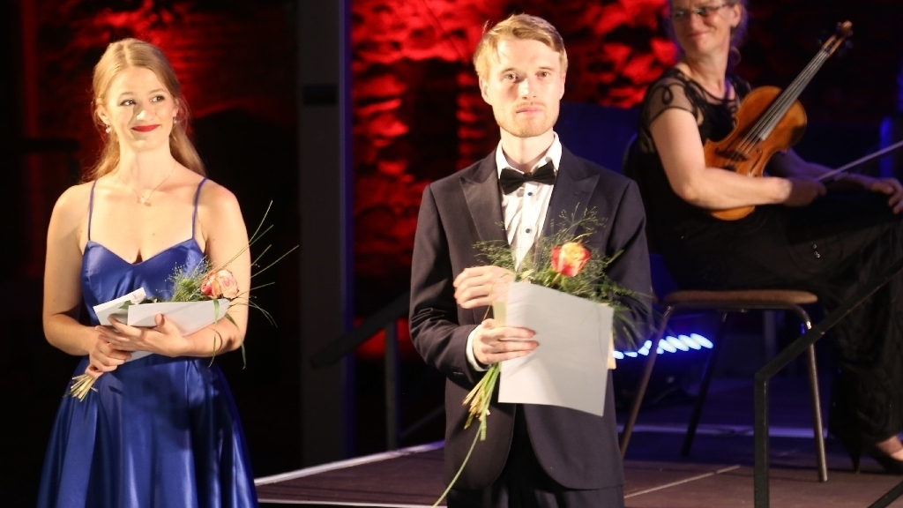

Biographie
Der junge deutsche Tenor Noah Schaul machte noch während seiner Schulzeit die ersten Bühnenerfahrung am Theater Aachen im Extrachor. 2014 begann er sein Gesangsstudium zunächst in Maastricht bei Axel Everaert und danach im Master Oper bei Carolyn Grace James und Michaela Kaune an der Hochschule für Musik und Theater Hamburg. Zusätzlich absolvierte Noah Schaul diverse Meisterkurse, unter anderem bei Kammersänger Robert Holl, Christiane Iven und Kammersängerin Angela Denoke. Noch während des Studiums arbeitete Noah Schaul in Bulgarien mit dem »Sofia Symphonic Orchestra« unter Leitung von Dario Salvi zusammen, wo er an der Erstaufnahme von »Der Waldmeister« von Johann Strauss mitwirkte. Noah bei der Preisverleihung an der Oder-Spree
Im Sommer 2019 gewann er den ersten Preis im Elise-Meyer-Wettbewerb für besonders begabte Studierende.
Außerdem erhielt Schaul beim Internationalen Opernkurs des Musikfestivals Oper Oder-Spree im Sommer 2020 den Publikumspreis und sang dort 2021 Nemorino in Gaetano Donizetti's »L’elisir d’amore«.
Im Theater Kiel gastierte Schaul als Akela und Kaa in der Uraufführung von Giovanni Sollimas Oper »Das Dschungelbuch«. Seit der Spielzeit 2021/22 ist er festes Ensemblemitglied am Theater Lübeck.